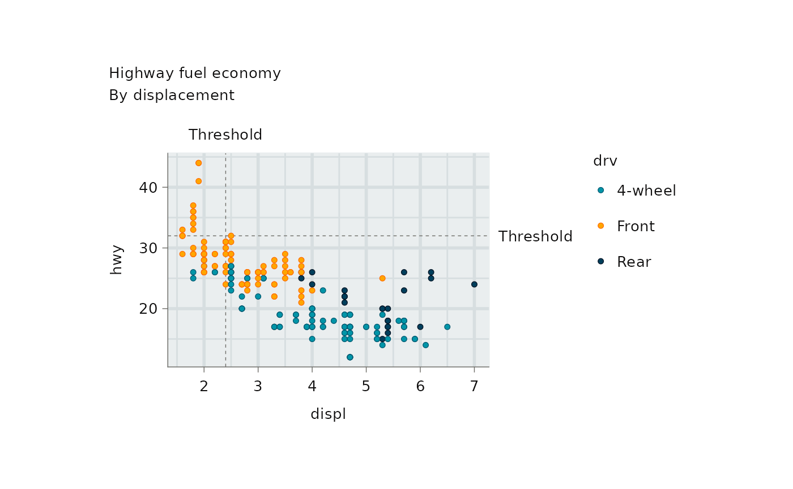

ggscribe extends ggplot2 annotation capabilities.
Note:
-
annotate_axis_ticks,annotate_axis_textandannotate_axis_bracketrequire (1) a globally set theme with explicit panel dimensions and (2)coord_cartesian(clip = "off") -
annotate_panel_shadeshould be before geoms.
In general, use the relevant scale function and breaks argument to annotate the axis unless there is a reason not to.
library(ggplot2)
library(dplyr)
set_theme(
ggrefine::theme_grey(
panel_heights = rep(unit(50, "mm"), 100),
panel_widths = rep(unit(75, "mm"), 100),
)
)
p <- ggplot2::mpg |>
mutate(drv = case_when(
drv == "4" ~ "4-wheel",
drv == "f" ~ "Front",
drv == "r" ~ "Rear",
)) |>
ggplot(aes(x = displ, y = hwy)) +
coord_cartesian(clip = "off") +
scale_fill_discrete(palette = jumble::jumble) +
scale_colour_discrete(palette = blends::multiply(ggplot2::get_theme()$palette.fill.discrete)) +
labs(title = "Highway fuel economy", subtitle = "By displacement\n")Add reference lines and labels.
p +
ggscribe::annotate_reference_line(xintercept = 2.4) +
ggscribe::annotate_reference_line(yintercept = 32) +
geom_point(aes(colour = drv, fill = drv)) +
scale_x_continuous(
sec.axis = ggscribe::dup_axis_text(
breaks = 2.4,
labels = "Threshold",
)
) +
scale_y_continuous(
sec.axis = ggscribe::dup_axis_text(
breaks = 32,
labels = "Threshold",
)
) 